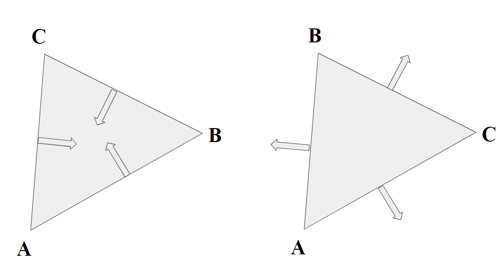

In this Assignment, we cover rasterizing images. In order to do this, we break up the image into triangles, and feed groups of 3 points into the rasterization pipeline. Depending on the desired image, there may or may not be some texture that needs to be mapped to the screen space: if so, there is an associated mapping to from pixel space to texture space. In any case, raw point sampling generally leads to jagged edges and aliasing: our pixel space just isn't high resolution enough to capture all of this detail. There are a number of techniques we can use to combat this. Firstly, we can supersample by taking multiple samples within the region of one pixel, and then taking the average of the values. This is very effective the more samples you have per pixel, but can be very costly. For texture mapping, there are much more efficient ways to implement anti-aliasing. We can implement bilinear interpolation to sample pixel locations in the texture space instead of just returning the color of the nearest pixel. Furthermore, we can utilize a mip-map with decreasing resolutions of the texture: when the step size in texture space is relatively small for a step in the rendering space, we opt for a higher resolution image. When step size in texture space is relatively large, we opt for a lower resolution image to combat potential aliasing. This is a low-cost, effective way to minimize aliasing in texture mapping. Ultimately, we will explore the fundamentals of image rasterization and texture mapping, as well as techniques to reduce aliasing while maintaining efficiency.
For the drawing triangles program, we are given three points. Our task is to figure out which pixels fall within those three points and fill them in with the proper color. There is a very clever way to do so, utilizing vector algebra. Essentially, for each of the bounding lines, we can perform a 90 degrees counter-clockwise rotation to get the vector normal. Then, taking a dot product with this vector encodes a cosine operation (a ⋅ b = |a||b|cos(x)), which is positive over (-π/2, π/2), zero for +/-π/2, and negative for (π/2, 3π/2). This tells us everything we need to know about which side of a line a point is on, and if we do this for all three lines of a triangle we can tell whether or not the point is within the triangle. We execute this as follows: the dot operation for a vector denoted by points (x1, y1) and (x2, y2) is simply (x - x1, y - y1) ⋅ (-(y2 - y1), (x2 - x1)). We perform this operation three times in a row from point A to B, then B to C, then C to A. What we are left with is:
In this diagram, we show that there are two possibilities: all normal vectors could be pointing outwards or inwards. In the outwards case we want all dot products to be negative (or zero), and for the inwards case we want all dot products to be positive (or zero). When these conditions are met, we know the point is inside or on the boundary of a triangle, and we know to fill it in. Now, we can iterative through all points within the bounding box of the triangle, evaluating wether the pixels are in the triangle using this method. It is worth noting that we actually sample at the +0.5 position, meaning point (3, 4) actually corresponds visually to (3.5, 4.5). Essentially, my algorithm is as follows: first, in the rasterize triangle function, I find the minimum and the maximum bounds for the x and y coordinates. Since there are three points, I accomplish this using a chain of min or max such as min(min(A, B), min(B, C)). Then, I set these parameters as the bounds for the for loop. For each point within this 'box', I add an offset of 0.5 to each coordinate and test whether it is in the triangle, outsourcing this process to a helper function which does the dot product procedure as described and returns true if all points are <= 0 or >= 0 and false otherwise. If the point is in the triangle, I call fill pixel on the x and y coordinates with the color provided. Here are the results of the algorithm on a sample svg file: